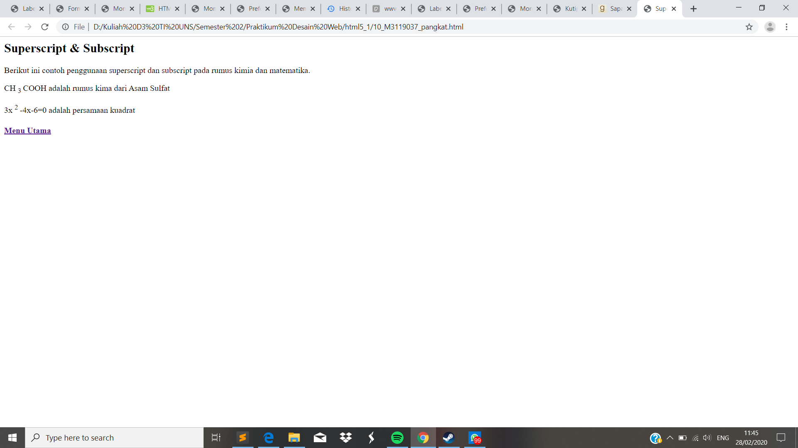

Pangkat
//Pangkat biasanya digunakan dalam penulisan rumus dalam beberapa bidang. Pangkat sendiri terbagi menjadi dua dalam penulisanya yaitu superscript dan subscript. Untuk superscript dapat menggunakan perintah <sup> dan diakhiri dengan </sup>. Sedangkan untuk subscript dapat menggunakan perintah <sub> dan diakhiri dengan </sub>
Codingan
<!DOCKTYPE html>
<html>
<head>
<meta charset="UTF-8">
<title> Superscript & Subscript </title>
</head>
<body>
<h2> Superscript & Subscript </h2>
<p> Berikut ini contoh penggunaan superscript dan subscript pada rumus kimia dan matematika. </p>
<p> CH <sub> 3 </sub> COOH adalah rumus kima dari Asam Sulfat</p>
<p> 3x <sup> 2 </sup>-4x-6=0 adalah persamaan kuadrat</p>
</body>
</html
>
Tampilan Hasil Percobaan

Kesimpulan
Pada percobaan membuat pangkat kali ini terdapat dua macam yakni subscript dan supscript. Untuk subscript digunakan apabila posisi pangkat yang akan dituju berada pada bagian bawah seperti penulisan rumus kimia diatas. Dan sedangkan untuk supscript digunakan apabila posisi pangkat yang akan dibuat berada pada bagian atas seperti pada penulisan bilangan matematika diatas.